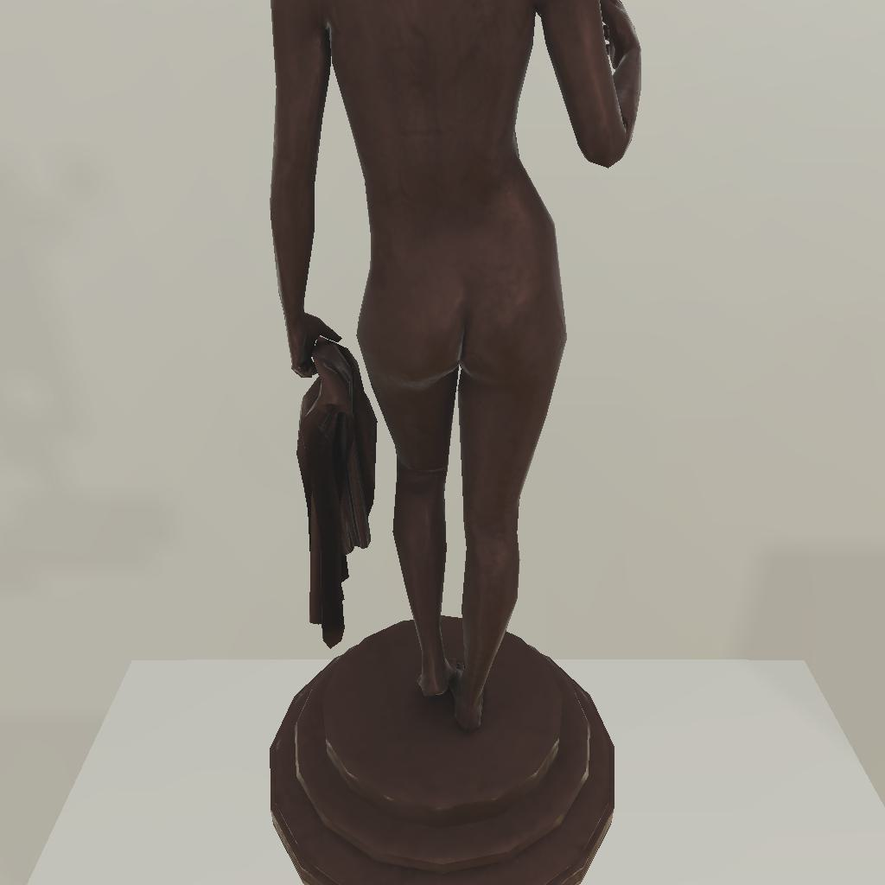

---------------------------------------------------------task: 4---------------------------------------------------------
--------------------------------------------------------------------------------------------------------------------------------------------------------------------
--------------------------------------------------------------------------------------------------------------------------------------------------------------------
Step:--------------------------------------------------------------------------18-------------------------------------------------------------------------------
----------------------------------------
VLM Prompt:
Image1:
**Instruction**
1. Analyze the provided image to identify all visible household objects, focusing on those relevant to the task description "examine the statue with the floorlamp."
2. Use the analysis of the image and the task hint "The agent must find an object of the desired type, locate and turn on a light source with the desired object in-hand." to answer the question: what is the most reasonable action in the choices for the task description "examine the statue with the floorlamp"?
4. Decide and write the answer using the template: The answer is: (i): , where i is the real number. If there is no desired object in the image, search every place based on **Initial Observation** to find the object. And if no one is exactly correct, choose a similar answer.
**Initial Observation**
You are in the middle of a room. Looking quickly around you, you can see armchair (1), coffeetable (1-2), sidetable (1), garbagecan (1), drawer (1), sofa (1), diningtable (1)
**Answer Choices**
(1): go to armchair 1
(2): go to coffeetable 1
(3): go to garbagecan 1
(4): go to drawer 1
(5): go to sofa 1
(6): go to coffeetable 2
(7): go to diningtable 1
(8): put statue 1 in/on sidetable 1
(9): examine sidetable 1
**Answer**
Let's think step by step by following the instructions.
----------------------------------------
----------------------------------------
Original Response:
The provided image shows a statue, which is the object relevant to the task description "examine the statue with the floorlamp." There is no floorlamp visible in the image. Therefore, we must use the initial observation to locate a light source.
The initial observation does not list a floorlamp as one of the visible household objects. However, the task hint suggests that the agent must find an object of the desired type, which in this case is a floorlamp, and then locate and turn on a light source with the desired object in-hand. Since the statue is the object in question, the agent will need to pick up the statue and then find a light source to examine it properly.
None of the answer choices directly mention finding or turning on a floorlamp. However, answer choice (8) suggests putting the statue in/on sidetable 1. This action could be reasonable if the sidetable has a lamp, or if it is near a light source that can be turned on to examine the statue. Without more information, we cannot be certain that this is the correct action, but based on the task hint, it seems like a plausible step towards the goal.
The answer is: (8): put statue 1 in/on sidetable 1.
----------------------------------------
----------------------------------------
>>> Refine Original VLM Response and Get Pure Action: put statue 1 in/on sidetable 1
----------------------------------------
-----------------------------------------------------------------
Running time: 9.714754343032837 seconds
Total Money: 1.3299899999999998
-----------------------------------------------------------------
-----------------------------------------------------------------
Text Observation:You put the statue 1 in/on the sidetable 1.
-----------------------------------------------------------------
UNSUCCEED